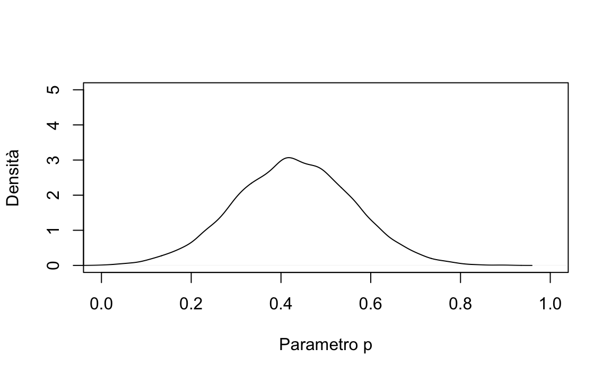

Capitolo 15 Il modello lineare
Prima di descrivere come il modello di regressione lineare possa essere applicato ai dati mediante l’approccio Bayesiano, esamineremo i modelli statistici Bayesiani che vengono utilizzati in alcuni casi più semplici, ovvero (1) il modello statistico per una proporzione e (2) il modello statistico utilizzato per il confronto tra due proporzioni. Estenderemo poi la discussione al caso in cui viene considerato (3) un campione di osservazioni misurate su scala continua, assumendo che ciascuna osservazione provenga da una distribuzione Normale. In tali circostanze, l’oggetto dell’inferenza sarà il parametro \(\mu\) che rappresenta la media della popolazione da cui le osservazioni sono state tratte. A questo punto saremo nelle condizioni di discutere (4) l’inferenza Bayesiana sulla differenza tra le medie di due popolazioni. Tale problema verrà affrontato specificando un modello di regressione lineare che include una variabile dipendente continua e una variabile indipendente dicotomica. Una volta chiarite le proprietà del modello di regressione in questo caso semplice, sarà immediato estendere la discussione (5) al caso di una variabile indipendente continua.
15.1 Modello Binomiale
Se facciamo nuovamente riferimento all’esempio del mappamondo di McElreath (2020), nel quale abbiamo osservato \(A = 6\) volte “acqua” in \(N = 9\) prove Bernoulliane indipendenti, allora il modello statistico che descrive l’esperimento casuale può essere formulato nei termini seguenti:
\[\begin{equation} \begin{aligned} A &\sim \text{Binomiale}(N, p) \\ p &\sim \text{Uniforme}(0, 1) \end{aligned} \tag{15.1} \end{equation}\]
dove la prima riga definisce la funzione di verosimiglianza e la seconda riga definisce la distribuzione a priori. Il segno \(\sim\) (tilde) si può leggere “si distribuisce come.” La prima riga, dunque, ci dice che la variabile aleatoria \(Y\) segue la distribuzione Binomiale di parametri \(N\) e \(p\). La seconda riga specifica che, quale distribuzione a priori, assumiamo una distribuzione uniforme in (0 e 1) per il parametro \(p\).
15.2 Il presidente Trump e l’idrossiclorochina
Cito dal Washington Post del 7 aprile 2020:
One of the most bizarre and disturbing aspects of President Trump’s nightly press briefings on the coronavirus pandemic is when he turns into a drug salesman. Like a cable TV pitchman hawking ‘male enhancement’ pills, Trump regularly extols the virtues of taking hydroxychloroquine, a drug used to treat malaria and lupus, as a potential ‘game changer’ that just might cure Covid-19.
Tralasciamo qui il fatto che il presidente Trump non è un esperto in questo campo. Esaminiamo invece le evidenze iniziali a supporto dell’ipotesi che l’idrossiclorochina possa essere utile per la cura del Covid-19, evidenze disponibili nel momento in cui il presidente Trump ha fatto le affermazioni riportate sopra.7 Tali evidenze sono state fornite da Gautret et al. (2020).
Il disegno sperimentale di Gautret et al. (2020) comprende, tra le altre cose, il confronto tra una condizione sperimentale e una condizione di controllo. Un articolo pubblicato da Hulme et al. (2020) si è posto il problema di rianalizzare i dati di Gautret et al. (2020) – si veda https://osf.io/5dgmx/. Tra gli autori di questo secondo articolo figura anche Eric-Jan Wagenmakers, uno psicologo molto conosciuto per i suoi contributi metodologici. Hulme et al. (2020) sottolineano il fatto che Gautret et al. (2020) si sono concentrati, nella loro analisi dei dati, soltanto su una parte del loro campione. Se però vengono considerati anche i pazienti che sono stati esclusi dall’analisi dei dati, le conclusioni a cui sono giunti Gautret et al. (2020) risultano fortemente indebolite.
L’analisi dei dati proposta da Hulme et al. (2020) richiede l’uso di alcuni strumenti statistici che, in queste dispense, non verranno discussi. Ma possiamo giungere alle stesse conclusioni di Hulme et al. (2020) anche usando le procedure statistiche che abbiamo descritto finora. Nella ricerca di Gautret et al. (2020) il confronto importante è tra la proporzione di paziente positivi al virus SARS-CoV-2 nel gruppo a cui è stata somministrata l’idrossiclorochina (6 su 14) e nel gruppo di controllo (a cui non è stata somministrata l’idrossiclorochina: 14 positivi su 16). Ciò che faremo sarà di calcolare la distribuzione a posteriori per queste due proporzioni. Rappresenteremo graficamente le due distribuzioni a posteriori per il parametro \(p\) che rappresenta la probabilità di risultare positivo al SARS-CoV-2. Calcoleremo anche, separatamente per i due gruppi, l’intervallo di credibilità al 95%. Quindi concluderemo facendo il confronto tra gli intervalli di credibilità dei due gruppi.
Leggiamo i dati in R creando i due vettori seguenti. Il vettore ym
contiene i dati del gruppo a cui è stata somministrata
l’idrossiclorochina e il vettore yc i dati del gruppo di controllo. Il
valore \(y = 1\) indica che il paziente è positivo al virus SARS-CoV-2
(l’ordine di 0 e 1 è irrilevante).
ym <- c(rep(1, 6), rep(0, 8))
ym
#> [1] 1 1 1 1 1 1 0 0 0 0 0 0 0 0
yc <- c(rep(1, 14), rep(0, 2))
yc
#> [1] 1 1 1 1 1 1 1 1 1 1 1 1 1 1 0 0Utilizzando la sintassi di rethinking, definiamo ora il modello statistico per una proporzione specificando una distribuzione a priori non informativa:
suppressPackageStartupMessages(library("rethinking"))
options(mc.cores = parallel::detectCores())
flist <- alist(
y ~ dbinom(1, p),
p ~ dbeta(1, 1)
)Calcoliamo la distribuzione a posteriori per il parametro \(p\) nel caso del gruppo sperimentale
m <- quap(
flist,
data = list(y = ym)
)Così facendo troviamo il seguente intervallo di credibilità al 95%:
precis(m, prob = 0.95)
#> mean sd 2.5% 97.5%
#> p 0.4285638 0.1322588 0.1693412 0.6877863Creiamo ora un grafico che rappresenta la distribuzione a posteriori del parametro \(p\):
post <- extract.samples(m)
plot(
density(post$p),
xlim = c(0, 1),
ylim = c(0, 5),
main = "",
xlab = "Parametro p",
ylab = "Densità"
)
Ripetiamo quindi la stessa procedura seguita sopra, usando però i dati del gruppo di controllo, e rappresentiamo la nuova distribuzione a posteriori del parametro \(p\) come abbiamo fatto in precedenza:
m <- quap(
flist,
data = list(y = yc)
)
precis(m, prob = 0.95)
#> mean sd 2.5% 97.5%
#> p 0.8749966 0.08267702 0.7129526 1.037041
post <- extract.samples(m)
plot(
density(post$p),
xlim = c(0, 1),
ylim = c(0, 5),
main = "",
xlab = "Parametro p",
ylab = "Densità"
)
lines(density(post$p), xlim = c(0, 1))
Le due figure che abbiamo realizzato presentano le distribuzioni a posteriori del parametro \(p\) (cioè la probabilità di risultare positivo al virus SARS-CoV-2) per i due gruppi di pazienti considerati nella ricerca di Gautret et al. (2020). Le figure mostrano che le due distribuzioni a posteriori sono chiaramente separate, il che suggerisce che il parametro \(p\) assume valori diversi nei due gruppi. Coerentemente con la conclusioni di Gautret et al. (2020), le stime a posteriori per il parametro \(p\) che abbiamo trovato suggeriscono dunque che i pazienti del gruppo sperimentale (a cui è stata somministrata l’idrossiclorochina) hanno una minore probabilità di risultare positivi al SARS-CoV-2 rispetto ai pazienti del gruppo di controllo (a cui non è stata somministrata l’idrossiclorochina).
Possiamo giungere a questa conclusione senza guardare le due figure ma confrontando gli intervalli di credibilità al 95% dei due gruppi. Gli intervalli di credibilità non si sovrappongono e questo suggerisce che il parametro \(p\) è diverso nei due gruppi. Possiamo dunque concludere, con un grado di certezza soggettiva del 95%, che nel gruppo sperimentale vi è una probabilità più bassa di risultare positivi al SARS-CoV-2 rispetto al gruppo di controllo.
Fino a questo punto non abbiamo fatto altro che replicare le conclusioni a cui sono giunti Gautret et al. (2020), sia pur utilizzando una procedura statistica diversa. Tuttavia, in questa anlisi dei dati c’è un aspetto che non abbiamo considerato. Hulme et al. (2020) hanno osservato che Gautret et al. (2020), nella loro analisi statistica, hanno escluso alcuni pazienti i quali, nel gruppo sperimentale, sono in realtà peggiorati, anziché essere migliorati. Se consideriamo dunque i dati di tutti i pazienti del campione che è stato raccolto (non solo quelli selezionati da Gautret et al. (2020), la situazione è la seguente. Gruppo sperimentale: 10 positivi su 18; gruppo di controllo: 14 positivi su 16. Ripetiamo dunque l’analisi descritta sopra utilizzando, per il gruppo sperimentale, tutti i dati che abbiamo a disposizione. Così facendo otteniamo il seguente intervallo di credibilità al 95%:
ym <- c(rep(1, 10), rep(0, 8))
ym
#> [1] 1 1 1 1 1 1 1 1 1 1 0 0 0 0 0 0 0 0
m <- quap(
flist,
data = list(y = ym)
)
precis(m, prob = 0.95)
#> mean sd 2.5% 97.5%
#> p 0.5555554 0.1171209 0.3260026 0.7851081Quando utilizziamo tutti i dati (e non soltanto i pazienti selezionati da Gautret et al. (2020)) notiamo che l’intervallo di credibilità al 95% per il gruppo sperimentale, ovvero [0.33, 0.79], si sovrappone all’intervallo di credibilità al 95% per il gruppo di controllo, ovvero [0.71 1.04]. In base agli standard correnti, un risultato di questo tipo non viene considerato come evidenza sufficiente per potere concludere che il parametro \(p\) assume un valore diverso nei due gruppi.
Concludiamo dicendo che questo, ovviamente, è solo un esercizio didattico: la ricerca di Gautret et al. (2020) include tante altre informazioni che qui non sono state considerate. Tuttavia, notiamo che la semplice analisi statistica che abbiamo descritto è stata in grado di replicare le conclusioni a cui sono giunti (per altra via) Hulme et al. (2020).
15.3 Modello Normale
Facciamo ora un altro esempio considerando, in questo caso, la distribuzione Normale
\[ \begin{aligned} Y_i &\sim \mathcal{N}(\mu, \sigma) \\ \mu &\sim \mathcal{N}(\mu = \bar{X}, \sigma = 100) \\ \sigma &= s_Y \end{aligned} \] Questo secondo modello statistico ci dice che la variabile aleatoria \(Y\) segue la distribuzione Normale di parametri \(\mu\) e \(\sigma\). Il parametro \(\mu\) è sconosciuto e abbiamo deciso di descrivere la nostra incertezza a priori relativa ad esso mediante una distribuzione a priori che segue la legge Normale con media uguale alla media campionaria e con deviazione standard 100. Il parametro \(\sigma\) è fissato ad un valore pari alla deviazione standard del campione, \(s_y\). In generale, però, anche il parametro \(\sigma\) viene considerato ignoto e ad esso potrebbe essere assegnata una distribuzione a priori come, ad esempio, \(\sigma \sim \text{Unif}(0, 100)\).
15.3.1 Il modello normale con quap()
Per fare un esempio, consideriamo i 30 valori del BDI-II dei soggetti clinici di Zetsche et al. (2019):
df <- data.frame(
x <- c(26, 35, 30, 25, 44, 30, 33, 43, 22, 43, 24, 19, 39, 31, 25, 28, 35, 30, 26, 31, 41, 36, 26, 35, 33, 28, 27, 34, 27, 22)
)Calcoliamo le statistiche descrittive:
true_sd <- sd(df$x)
true_sd
#> [1] 6.606858
sample_mean <- mean(df$x)
sample_mean
#> [1] 30.93333Definiamo ora il modello statistico mediante la funzione alist()
flist <- alist(
x ~ dnorm(mu, sigma),
mu ~ a,
a ~ dnorm(sample_mean, 100),
sigma ~ true_sd
)e stimiamo la distribuzione a posteriori di \(\mu\):
set.seed(123)
m1 <- quap(
flist,
data = df
)Esaminando il risultato ottenuto mediante precis():
precis(m1)
#> mean sd 5.5% 94.5%
#> a 30.93333 1.206154 29.00567 32.861Possiamo così stabilire che l’intervallo di credibilità al 95% per il valore medio del BDI-II è compreso tra [29.0, 32.8]. Questo esempio ci mostra come possiamo calcolare l’intervallo di credibilità nel caso della media di un campione. Nella sezione successiva ci porremo il problema di come sia possibile fare il confronto tra le medie di due campioni indipendenti.
15.4 Il modello di regressione lineare
I due modelli statistici che abbiamo presentato sopra descrivono il comportamento di una singola variabile aleatoria: una proporzione di “successi” o la media del livello BDI-II in un campione. Se la distribuzione a priori non è informativa, la distribuzione a posteriori risulta centrata sul valore della statistica campionaria utilizzata per la stima del parametro (\(\bar{y}\) o \(p\)). Quello che “guadagnamo” calcolando la distribuzione a posteriori del parametro è la possibilità di quantificare la nostra incertezza rispetto alla stima del parametro (\(\mu\) o \(\pi\)): se l’intervallo di credibilità è grande, questo significa che i dati del campione sono poco informativi rispetto al valore del parametro; se invece l’intervallo di credibilità è piccolo, allora concludiamo che siamo piuttosto certi del valore della nostra stima.
Tuttavia, i modelli di interesse per la psicologia (e per le altre scienze) descrivono le relazioni tra due o più variabili, e non soltanto il valore di una singola variabile. Per esempio, nel suo studio Regression towards mediocrity in hereditary stature, Galton (1886) si è chiesto come sia possibile descrivere la relazione tra l’altezza dei figli e l’altezza dei padri. Il modo più semplice per rispondere ad una domanda di questo tipo è quello di formulare la risposta nei termini di un modello di regressione lineare – infatti, la tecnica statistica della regressione lineare fu inventata da Galton proprio per questo scopo.
Il modello di regressione lineare è dunque il più semplice dei modelli statistici che descrivono la relazione tra due (o più) variabili. Usando la notazione che abbiamo introdotto in questo capitolo, il modello di regressione può essere descritto nel modo seguente:
\[ \begin{aligned} Y_i &\sim \mathcal{N}(\mu_i, \sigma) \\ \mu_i &= \alpha + \beta(X_i - \bar{X}) \\ \alpha &\sim \mathcal{N}(0, \sigma_{\alpha}) \\ \beta &\sim \mathcal{N}(0, \sigma_{\beta}) \\ \sigma &\sim \text{Unif}(0, 50) \end{aligned} \] La verosimiglianza indica che ciascun valore \(Y_i\) (la nostra variabile dipendente) segue una distribuzione Normale. Tuttavia, ciascuna \(Y_i\) segue una distribuzione Normale avente una media diversa (come indicato dal pedice \(i\) usato per \(\mu_i\)). In questa formulazione del modello, tutte le distribuzioni Normali relative alla \(Y\) hanno la stessa deviazione standard (\(\sigma\), il che corrisponde all’assunzione di omoschedasticità). La cosa importante è che la media \(\mu\) non è più il parametro che deve essere stimato – come avveniva invece nel caso del modello Normale che abbiamo discusso nel caso dei valori BDI-II. Nel modello statistico della regressione lineare, invece, \(\mu_i\) è espresso nei termini di due altri due parametri, \(\alpha\) e \(\beta\), e nei termini di una quantità osservabile chiamata \(X\) (la nostra variabile indipendente), come indicato nella seconda riga della descrizione del modello statistico.
La seconda riga della specificazione del modello statistico non esprime una relazione stocastica (non viene usato il segno \(\sim\)), ma bensì una relazione deterministica (come indicato dall’uso del segno di uguale). Ciò significa che, una volta fissati i parametri \(\alpha\) e \(\beta\), il valore \(\mu_i\) è determinato in maniera univoca (questa è la componente deterministica del modello di regressione lineare). Se il modello di regressione lineare è espresso come \(\mu_i = \alpha + \beta(X_i - \bar{X})\), allora possiamo assegnare ai parametri \(\alpha\) e \(\beta\) l’interpretazione che abbiamo già incontrato in precedenza.
Il parametro \(\alpha\) è uguale alla media della \(Y\). In precedenza abbiamo detto che, dal punto di vista geometrico, \(\alpha\) corrisponde all’ordinata del punto in cui la retta di regressione interseca l’asse verticale di un sistema di coordinate cartesiane. Nel caso presente abbiamo espresso i dati come scarti dalla media: \(X_i - \bar{X}\), da cui segue che la media di \(X\) avrà valore zero. Da ciò deriva l’interpretazione di \(\alpha\) che abbiamo fornito sopra.
Il parametro \(\beta\) ci dice di quanto varia, in media, il valore \(Y\) per ogni variazione unitaria della \(X\). Abbiamo visto in precedenza che il parametro \(\beta\) viene chiamato “pendenza” perché, in termini geometrici, il modello di regressione lineare assume la forma di una retta che, all’interno di un diagramma a dispersione, approssima quanto meglio è possibile la nube di punti \((X, Y)\).
Nel modello statistico presentato sopra, la nostra incertezza su \(\beta\) è stata quantificata mediante una distribuzione a priori centrata sullo zero e con una deviazione standard pari a \(\sigma_{\beta}\). La nostra incertezza su \(\alpha\) è stata quantificata mediante una distribuzione a priori centrata sullo zero e con una deviazione standard pari a \(\sigma_{\alpha}\). Infine, la nostra incertezza su \(\sigma\) è stata quantificata mediante una distribuzione uniforme compresa tra 0 e 50.
Per ora ci siamo limitati a descrivere la formulazione Bayesiana del modello di regressione mediante la sintassi di rethinking, così come fa McElreath (2020). Nelle sezioni seguenti vedremo come sia possibile svolgere l’analisi di regressione in termini Bayesiani. Inizieremo considerando il caso più semplice, ovvero quello nel quale la variabile \(X\) è una variabile dicotomica; considereremo poi il caso in cui \(X\) è una variabile continua.
15.4.1 Variabile indipendente dicotomica
Solitamente, in un modello di regressione lineare come quello descritto nella sezione Il modello di regressione lineare, la variabile \(X\) è una variabile continua. Tuttavia, è anche possibile che \(X\) sia una variabile discreta. Consideriamo qui il caso più semplice, ovvero quello in cui \(X\) assume solo due valori: 0 e 1. In tali circostanze, il modello lineare può essere usato per il confronto tra le medie di due gruppi. Vediamo perché.
Se \(X\) è una variabile dicotomica (con valori 0 e 1), allora per il modello lineare \(\mu_i = \alpha + \beta x_i\) abbiamo quanto segue. Quando \(X=0\), il modello diventa
\[\mu_i = \alpha\] mentre, quando \(X=1\), il modello diventa
\[\mu_i = \alpha + \beta.\] Ciò significa che il parametro \(\alpha\) è uguale alla media del gruppo codificato con \(X=0\) e il parametro \(\beta\) è uguale alla differenza tra le medie dei due gruppi (essendo la media del secondo gruppo uguale a \(\alpha + \beta\)).
In tali circostanze, il parametro \(\beta\) risulta particolarmente utile in quanto, nel caso di due gruppi, codifica direttamente l’effetto di una manipolazione sperimentale o di un trattamento (ovvero, esprime la differenza tra le medie di due gruppi). Per “effetto di un trattamento” si intende appunto la differenza tra le medie di due gruppi (per esempio, il gruppo “sperimentale” e il gruppo “di controllo”). L’inferenza su \(\beta\) può dunque aiutarci a capire quanto può essere considerato “robusto” l’effetto di un trattamento o di una manipolazione sperimentale.
15.4.2 Un esempio pratico
Esaminiamo un sottoinsieme di dati tratto dal National Longitudinal Survey of Youth i quali fanno parte di un esempio discusso da Gelman et al. (2020). I soggetti sono bambini di 3 e 4 anni. La variabile dipendente, kid_score, è il punteggio totale del Peabody Individual Achievement Test (PIAT) costituito dalla somma dei punteggi di tre sottoscale (Mathematics, Reading comprehension, Reading recognition). La variabile indipendente, mom_hs, è il livello di istruzione della madre, codificato con due livelli: scuola media superiore completata oppure no. La domanda della ricerca è se il QI del figlio (misurato con la scala PIAT) risulta o meno associato al livello di istruzione della madre.
Codifichiamo il livello di istruzione della madre (\(X\)) con una variabile indicatrice (ovvero, una variabile che assume solo i valori 0 e 1) tale per cui:
\(X=0\): la madre non ha completato la scuola secondaria di secondo grado (scuola media superiore);
\(X=1\): la madre ha completato la scuola media superiore.
Supponiamo che i dati siano contenuti nel data.frame df.
library("foreign")
df <- read.dta(here("data", "kidiq.dta"))
head(df)
#> kid_score mom_hs mom_iq mom_work mom_age
#> 1 65 1 121.11753 4 27
#> 2 98 1 89.36188 4 25
#> 3 85 1 115.44316 4 27
#> 4 83 1 99.44964 3 25
#> 5 115 1 92.74571 4 27
#> 6 98 0 107.90184 1 18Calcoliamo le statistiche descrittive per i due gruppi:
df %>%
group_by(mom_hs) %>%
summarise(
mean_kid_score = mean(kid_score),
std = sqrt(var(kid_score))
)
#> `summarise()` ungrouping output (override with `.groups` argument)
#> # A tibble: 2 x 3
#> mom_hs mean_kid_score std
#> <dbl> <dbl> <dbl>
#> 1 0 77.5 22.6
#> 2 1 89.3 19.0Il punteggio PIAT medio è 77.5 per i bambini la cui madre non ha il diploma di scuola media superiore, e pari a 89.3 per i bambini la cui madre ha completato la scuola media superiore. Questa differenza suggerisce un’associazione tra le variabili, ma tale differenza potrebbe essere soltanto la conseguenza della variabilità campionaria, senza riflettere una caratteristica generale della popolazione. Come possiamo usare il modello statistico lineare per fare inferenza sulla differenza osservata tra i due gruppi?
Per rispondere a questa domanda specifichiamo il modello statistico che descrive la differenza tra i punteggi PIAT dei due gruppi mediante un modello di regressione lineare:
flist <- alist(
kid_score ~ dnorm(mu, sigma),
mu ~ a + b * mom_hs,
a ~ dnorm(86.8, 100),
b ~ dnorm(0, 100),
sigma ~ dunif(0, 100)
)Si noti che abbiamo specificato tale modello statistico seguendo la stessa logica descritta all’inizio della sezione Il modello di regressione lineare. Ovvero, abbiamo esplicitato:
la verosimiglianza dei dati;
il modello statistico della regressione lineare che esprime il valore atteso della variabile dipendente come una funzione lineare della variabile indipendente;
la distribuzione a priori di ciascuno dei parametri del modello, ovvero \(a\), \(b\) e \(\sigma\).
Nel caso presente, abbiamo specificato due distribuzioni a priori “debolmente informative” per i parametri \(a\) e \(b\). La distribuzione a priori del parametro \(a\) è una distribuzione Normale centrata sulla media di tutti i dati (calcolata ignorando la suddivisione in gruppi), con una deviazione standard relativamente grande. Ciò significa che, a priori, per il parametro \(a\) riteniamo plausibili valori che sono inclusi nell’intervallo \(86.8 \pm 2 \times 100\) punti PIAT, anche se riteniamo più probabili i valori prossimi a 86.8. Così facendo, prima di avere osservato i dati campionari, esprimiamo una generale incertezza su quello che potrebbe essere il valore della media del gruppo codificato con \(X = 0\).
In maniera simile, caratterizziamo il possibile valore della differenza tra le medie tra i due gruppi (ciò a cui siamo interessati) in maniera molto vaga: affermiamo che potrebbe essere un valore qualsiasi, probabilmente contenuto nell’intervallo \(0 \pm 2 \times 100\), assegnando a priori una plausibilità maggiore ai valori prossimi allo zero (positivi e negativi). Per il parametro \(b\), specifichiamo dunque una distribuzione a priori Normale centrata sullo zero. Così facendo, la distribuzione a priori non favorisce né l’ipotesi secondo cui il parametro \(b\) sia maggiore di zero (ovvero, che la media dei punteggi PIAT sia maggiore nel gruppo codificato con \(X = 0\) rispetto al gruppo codificato con \(X = 1\)), né l’ipotesi opposta. Specificando per \(b\) una distribuzione a priori simmetrica centrata sullo zero non introduciamo dunque alcuna distorsione nella distribuzione a posteriori: non favoriamo né l’ipotesi a cui potremmo essere interessati (ad esempio, \(a > 0\)), né l’ipotesi opposta.
Infine, specifichiamo distribuzione a priori uniforme nell’intervallo (0, 100) per il parametro \(\sigma\) che descrive la distribuzione dei dati attorno al loro valore atteso (ovvero, attorno alla retta di regressione).
Adattiamo il modello ai dati utilizzando la funzione quap():
m1 <- quap(
flist,
data = df
)Estraiamo alcuni campioni dalla distribuzione a posteriori:
post <- extract.samples(m1)
post[1:5, ]
#> a b sigma
#> 1 80.07328 9.006764 19.73586
#> 2 77.26278 11.935567 19.77395
#> 3 76.66754 11.448966 19.31510
#> 4 77.23189 10.742990 19.97299
#> 5 80.54546 9.255061 19.83349Esaminiamo la distribuzione a posteriori dei parametri mediante le istruzioni seguenti.
par(mfrow = c(1, 3))
dens(
post$a, lwd = 2.5, xlab = "",
ylab = "Densità", main = "p(a | x, y)",
cex.lab = 1.5, cex.axis = 1.35, cex.main = 1.5,
cex.sub = 1.5
)
dens(
post$b, lwd = 2.5, xlab = "",
ylab = "", main = "p(b | x, y)",
cex.lab = 1.5, cex.axis = 1.35, cex.main = 1.5,
cex.sub = 1.5
)
dens(
post$sigma, lwd = 2.5, xlab = "",
ylab = "", main = "p(sigma | x, y)",
cex.lab = 1.5, cex.axis = 1.35, cex.main = 1.5,
cex.sub = 1.5
)
par(mfrow = c(1, 1))Figura 15.1: Distribuzioni a posteriori dei parametri a, b e \(\sigma\) del modello statistico lineare che descrive i punteggi del Peabody Individual Achievement Test come funzione del gruppo di appartenenza: i bambini la cui madre non ha completato la scuola media superiore e i bambini la cui madre ha completato la scuola media superiore. I dati sono tratti da Gelman et al. (2020).
I risultati possono anche essere esaminati mediante la funzione precis() che fornisce la stima a posteriori del parametro e l’intervallo di credibilità al livello desiderato:
precis(m1, prob = 0.95)
#> mean sd 2.5% 97.5%
#> a 77.55837 2.0528231 73.534910 81.58183
#> b 11.75868 2.3158682 7.219661 16.29770
#> sigma 19.80505 0.6721414 18.487679 21.12243I risultati confermano ciò che ci aspettavamo: il coefficiente \(a\) corrisponde alla media del gruppo codificato con \(X = 0\), ovvero la media dei punteggi PIAT per i bambini la cui madre non ha completato la scuola media superiore; il coefficiente \(b\) corrisponde alla differenza tra le medie dei due gruppi, ovvero 89.32 - 77.55 = 11.77. Il coefficiente \(b\) ci dice dunque che i bambini la cui madre ha completato la scuola superiore ottengono in media 12 punti in più rispetto ai bambini la cui madre non ha completato la scuola superiore. Per ora non consideriamo l’interpretazione del parametro \(\sigma\) (si veda più sotto). Una rappresentazione grafica dell’interpretazione che abbiamo fornito ai parametri del modello lineare è fornita nella figura 15.2.
Figura 15.2: Distribuzione dei punteggi del Peabody Individual Achievement Test in due gruppi di bambini facenti parte del campione discusso da Gelman et al. (2020): bambini la cui madre non hanno completato la scuola media superiore (\(X\) = 0) e bambini la cui madre ha completato la scuola media superiore (\(X\) = 1).
Abbiamo visto sopra che il parametro \(b\) = 11.77 riflette semplicemente la differenza tra le medie dei due gruppi. Ma il modello statistico lineare ci dice qualcosa in più: esso quantifica la nostra incertezza relativamente a tale differenza, al di là delle caratteristiche specifiche del particolare campione che abbiamo esaminato. È ovvio chiedersi: se esaminassimo un altro campione, quanto sarebbe grande questa differenza? E in un altro campione ancora? Il modello statistico lineare ci dice che, indipendentemente da quale campione di dati verrà esaminiamo, ci possiamo aspettare, con un grado di certezza del 95%, che la differenza tra le medie dei due gruppi sia compresa nell’intervallo tra 7.2 e 16.3 punti PIAT. Questo è il significato dell’intervallo di credibilità al 95% che è stato calcolato e che ci viene fornito dalla funzione precis().
L’intervallo di credibilità al 95% rappresenta una stima dell’intervallo di valori che contengono il 95% dell’area della distribuzione a posteriori del parametro \(b\). Nella figura 15.1 si vedono le distribuzioni a posteriori dei parametri \(a\) e \(b\). Tali distribuzioni sono state generate estraendo un numero molto grande di campioni dalle distribuzioni a posteriori di \(a\) e \(b\). Solitamente tali stime sono ottenute mediante una variante dell’algoritmo di Metropolis; l’approssimazione quadratica qui usata fornisce un’approssimazione a questo processo. Dalla figura 15.1 vediamo che le distribuzioni a posteriori tendono ad essere Normali. Vediamo inoltre che i valori più plausibili per il parametro \(b\) sono compresi tra 7.2 e 16.3, come ci dice l’intervallo di credibilità al 95%. Il problema di come sia possibile specificare un intervallo di credibilità sulla base delle informazioni fornite dalla distribuzione a posteriori è discusso nel capitolo XX.8
In conclusione, il modello statistico lineare riassume la differenza nei punteggi medi del test PIAT nei due gruppi di bambini: i bambini la cui madre ha completato la scuola media superiore e bambini la cui madre non ha completato la scuola media superiore. Il modello statistico lineare ci consente inoltre di fare inferenza sulla differenza nei punteggi medi del test PIAT nei due gruppi di bambini. Viene infatti definito un livello di credibilità che descrive, ad un determinato grado di certezza, quelli che sono i valori plausibili di tale differenza, al di là delle idiosincrasie del particolare campione che abbiamo esaminato, ovvero tenendo in considerazione il fenomeno della variabilità campionaria. Questo è il processo di inferenza Bayesiana che viene svolta mediante l’uso di un modello statistico lineare.
15.4.2.1 Quale distribuzione a priori è corretta?
Un grave problema che è emerso negli anni recenti relativamente all’analisi dei dati psicologici (e non solo) è il cosiddetto “\(p\)-hacking,” ovvero la pratica di adattare il modello e i dati allo scopo di ottenere il risultato desiderato. Il risultato desiderato è generalmente un valore-\(p\) inferiore al 5%. Il problema è che quando il modello statistico viene modificato alla luce dei dati osservati, i valori-\(p\) non mantengono più il loro significato originario: in altre parole, il “\(p\)-hacking” aumenta la probabilità di ottenere dei risultati falsi. L’approccio Bayesiano non prevede i valori-\(p\), ma il rischio rimane se scegliamo le distribuzioni a priori in base alle proprietà del campione allo scopo di ottenere il risultato desiderato. La procedura che invece deve essere seguita è quella di scegliere le distribuzioni a priori sulla base di considerazioni generali, indipendentemente dalle specifiche caratteristiche del campione.
15.5 Una variabile indipendente continua
Continuiamo ora con l’esempio relativo al National Longitudinal Survey of Youth discusso da Gelman et al. (2020) e poniamoci ora il problema di descrivere l’associazione tra
l’intelligenza del bambino, kid_score (ovvero il punteggio totale del Peabody Individual Achievement Test,PIAT), e mom_iq (ovvero il quoziente di intelligenza della madre), che rappresenta una variabile continua.
df %>%
ggplot(aes(x = mom_iq, y = kid_score)) +
geom_point() +
geom_smooth(method = "lm", se = FALSE) +
labs(
x = "QI della madre",
y = "Peabody Individual Achievement Test"
)
#> `geom_smooth()` using formula 'y ~ x'Figura 15.3: Punteggio del test PIAT come funzione del QI materno con sovrapposta la retta di regressione. Ogni punto sulla retta di regressione può essere concepito come un punteggio il punteggio predetto per un bambino la cui madri ha il QI corrispondente o come il punteggio PIAT medio per una sottopopolazione di bambini le cui madri hanno tutte quel particolare valore di QI. I dati sono tratti da Gelman et al. (2020).)
Il modello statistico lineare diventa:
\[ \begin{aligned} Y_i &\sim \mathcal{N}(\mu_i, \sigma) \\ \mu_i &= \alpha + \beta(X_i - \bar{X}) \\ \alpha &\sim \mathcal{N}(0, \sigma_{\alpha}) \\ \beta &\sim \mathcal{N}(0, \sigma_{\beta}) \\ \sigma &\sim \text{Unif}(0, 50) \end{aligned} \]
Abbiamo descritto \(X\) nei termini degli scostamenti dalla media (\(X_i - \bar{X}\)) per fare in modo che il coefficiente \(\alpha\) corrisponda al valore atteso della \(Y\) in corrispondenza della media di \(X\) (quoziente di intelligenza della madre) – questa è una conseguenza del fatto che la retta di regressione passa per il punto \((\bar{X}, \bar{Y})\). Infatti, avrebbe poco senso chiederci qual è il valore atteso del punteggio PIAT quando il quoziente d’intelligenza della madre è uguale a zero.
Specifichiamo dunque il modello statistico lineare con la sintassi richiesta da rethinking:
flist <- alist(
kid_score ~ dnorm(mu, sigma),
mu ~ a + b * (mom_iq - mean(mom_iq)),
a ~ dnorm(mean(kid_score), 100),
b ~ dnorm(0, 100),
sigma ~ dunif(0, 100)
)Adattiamo il modello di regressione ai dati
m2 <- quap(
flist,
data = df
)Esaminiamo il risultato ottenuto mediante la funzione precis():
precis(m2, prob = 0.95)
#> mean sd 2.5% 97.5%
#> a 86.7973283 0.87475112 85.0828476 88.5118090
#> b 0.6099751 0.05838627 0.4955402 0.7244101
#> sigma 18.2240956 0.61857167 17.0117174 19.4364738Troviamo così che
\[
\mathbb{E}(\text{kid_score}) = 86 + 0.61 \cdot x,
\]
laddove \(x\) è la variabile kid_score espressa come scostamento rispetto al suo valore medio. Tale retta di regressione stimata è mostrata assieme ai dati nella figura 15.3.
Il coefficiente \(b\) ci dice che, all’aumentare di un punto del quoziente d’intelligenza della madre, la media dei punteggi PIAT cresce di 0.61 unità. Il parametro \(\sigma\) ci dice che la deviazione standard che quantifica la dispersione dei dati attorno alla retta di regressione è pari a 18.22.
L’intervallo di credibilità di questo coefficiente ci dice che, con un livello di certezza del 95%, possiamo essere sicuri che, all’aumentare di un punto del quoziente d’intelligenza della madre, la media dei punteggi PIAT crescerà, come minimo, di 0.50 punti e, come massimo, di 0.72 punti. La differenza 0.72 - 0.50 esprime il nostro grado di incertezza rispetto alla stima del parametro, quando vogliamo che la nostra stima sia “credibile” al livello di 0.95. Ma non c’è niente di “magico” o necessario relativamente al livello di 0.95. Infatti, il default della funzione precis() è 0.89. Ciascuno di questi valori è
arbitrario. Sono possibili tantissime soglie per quantificare la nostra incertezza: alcuni ricercatori usano il livello di 0.5. Il nostro obiettivo è quello di descrivere il livello della nostra incertezza relativamente alla stima del parametro. E la nostra incertezza è
descritta dall’intera distribuzione a posteriori. Per cui il metodo più semplice, più diretto e più completo per descrivere la nostra incertezza rispetto alla stima dei parametri è quello di riportare graficamente tutta la distribuzione a posteriori, come indicato per esempio nella figura 15.4.
post <- extract.samples(m2)
par(mfrow = c(1, 3))
dens(
post$a, lwd = 2.5, xlab = "",
ylab = "Densità", main = "p(a | x, y)",
cex.lab = 1.5, cex.axis = 1.35, cex.main = 1.5,
cex.sub = 1.5
)
dens(
post$b, lwd = 2.5, xlab = "",
ylab = "", main = "p(b | x, y)",
cex.lab = 1.5, cex.axis = 1.35, cex.main = 1.5,
cex.sub = 1.5
)
dens(
post$sigma, lwd = 2.5, xlab = "",
ylab = "", main = "p(sigma | x, y)",
cex.lab = 1.5, cex.axis = 1.35, cex.main = 1.5,
cex.sub = 1.5
)
par(mfrow = c(1, 1))Figura 15.4: Distribuzione a posteriori dei parametri \(a\), \(b\) e \(sigma\) del modello statistico lineare che descrive i punteggi del Peabody Individual Achievement Test come funzione del quoziente d’intelligenza della madre espresso come scostamento rispetto al suo valore medio. I dati sono tratti da Gelman et al. (2020).
Conclusioni
Questo capitolo ha introdotto il modello bivariato di regressione lineare, ovvero un metodo che ci consente di stimare l’associazione tra una variabile indipendente e una variabile dipendente. La distribuzione Normale può essere usata per specificare la funzione di verosimiglianza in modelli statistici di questo tipo perché può essere concepita come un
modo di contare in quanti diversi modi diverse combinazioni di \(\mu\) e \(\sigma\) possono produrre un’osservazione. Per adattare questi modelli ai dati, il presente capitolo ha introdotto un’approssimazione quadratica della distribuzione a posteriori tramite la funzione quap(). Sono state inoltre introdotte nuove procedure per visualizzare le distribuzioni a posteriori e per descrivere le stime a posteriori.
Si noti che, per definire la distribuzione a priori del parametro \(p\) di una distribuzione di Bernoulli, abbiamo usato una distribuzione uniforme (a priori non informativa), ovvero una Beta(1, 1). In tali circostanze, l’intervallo di credibilità è praticamente identico all’intervallo di confidenza di tipo frequentista. L’intervallo di credibilità, invece, differisce dall’intervallo di confidenza frequentista quando il modello statistico Bayesiano include una distribuzione a priori informativa o debolmente informativa. L’analisi dei dati Bayesiana fa quasi sempre uso di distribuzioni a priori debolmente informative, mentre le distribuzioni a priori informative sono più rare. Le distribuzioni a priori debolmente informative hanno quale scopo la regolarizzazione, cioè, l’obiettivo di mantenere le inferenze in una gamma ragionevole di valori; ciò contribuisce nel contempo a limitare l’influenza eccessiva delle osservazioni estreme (valori anomali).
In seguito, quest’idea è stata completamente screditata.↩︎
I metodi di stima MCMC costituiscono la modalità usuale per generare la distribuzione a posteriori nell’analisi Bayesiana. In queste dispense, però, ci limitiamo ai metodi di stima basati sull’approssimazione quadratica. Abbiamo deciso di svolgere gli esercizi mediante l’approssimazione quadratica piuttosto che con il metodo MCMC perché l’installazione sul proprio computer del software necessario per le analisi MCMC costituisce un problema di tipo informatico che esula dagli scopi di questo insegnamento.↩︎